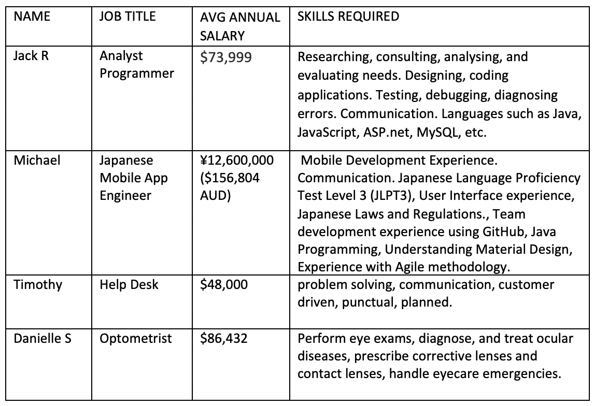

Introduction to IT - Assignment 2
Group 16
Team Profile
Surnames and student numbers have been omitted to protect the privacy of Group 16's team members.
Team Name
Our team name is Group 16.
Personal Information
Timothy
I live and work on Wurundjeri land in Melbourne. I completed a Certificate IV in Information Technology at TAFE before starting a Computer Science Degree at Latrobe University, then switching to the online Bachelor of Information Technology at RMIT via OUA. In my spare time I enjoy playing and learning about the making of videogames, hanging out with my two cats and consuming Manga and Anime. I love a good mystery. My biggest motivation for wanting to study in this area was to learn more about how computers worked and how to make them do interesting and useful things. I have experience with a few languages, though I am most familiar with Java and PHP. Currently a member of the IIT Assignment group named Group 16.
Danielle
I’m a 21-year-old Australian, I went to high school in Bacchus Marsh where I lived all my life until this year when I moved to St Leonards. I started university at RMIT city campus in 2018 studying a Bachelor of Science then began doing my studies online just before the pandemic started. This class is one of the final 2 classes I have before completing my degree. A hobby of mine is playing piano and reading horror books, my favourite author is Stephen King. I am doing a Bachelor of Science and have chosen this introduction to IT class as an elective. Probably a silly reason to be interested in IT but one of my favourite tv shows is Mr Robot which is about a group of hackers. This show made me realise how much of the world operates and relies on technology to run things such as the economy and how easily your personal information can be stolen online. I have not had much IT experience except using basic things on a computer like the internet and excel.
Michael
I'm from New Zealand. I have studied video game development in NZ. I have previously lived in Japan. I used to play rugby league. I also trained in boxing, kickboxing, judo and Brazilian Jiu Jitsu. I enjoy watching combat sports including boxing, MMA, kickboxing, and sumo. I also enjoy watching rugby league and support the New Zealand Warriors.
I started my interest in IT when I got my first game console. It was a SEGA master system 2. I was fascinated by how someone was able to create these games and how they worked. I studied video game development and have done some game work previously. I eventually moved to Australia and started another carer. While I was living abroad in Japan I decided I would like to move there permanently. One carer pathway that is very available to immigrants to Japan is IT. I decided to continue my studies in IT at RMIT so I could keep working and earning money while studying on the side. I hope to use my degree to move to another country and become a developer. Japan would be my preference as I already speak Japanese fairly well and have previously lived there.
Jackson
I’m from NSW and am currently studying online due to coronavirus. As pets I keep a fish tank filled with guppies and my dog who is nearly 17 years old, I’ve had him since I was six after begging for a puppy every birthday since I could talk.
Outside of my pets I enjoy reading, playing games with friends and occasionally working on little games of my own. I’ve worked on and off in construction since I was 16 however as I’ve gotten older, I’ve realized It’s not a career path I wish to continue down. I am studying IT because I’ve always been interested in tech, as a child I would get in trouble for downloading this or that on the family computer. I also used to create very simple little robots using parts given to me by my grandfather (electrical engineer) and parts I tore out of other things like remote controlled cars. These days I enjoy making games in unity and learning more about programming.
Team Profile
Timothy
Danielle
Michael
Jackson
Ideal Jobs
Similarities between the roles:
Similarities between the roles:
Almost all our roles require some interaction with clients. An Analyst Programmer needs to consult with the client to aid their evaluation of what needs to be done to create the requested application.
An IT Help Desk employee must determine what exactly the client needs, help them troubleshoot, and find a solution to any IT issues they are having.
An Optometrist must instruct their clients how to perform the required actions during an eye exam. They must also communicate their recommendations for a client’s treatment and what corrective measures they should take to aid their eyesight.
An Analyst Programmer and a Japanese Mobile App Engineer will both require programming skills in multiple languages, skills with collaborative services like GitHub and experience with agile methodology as most software creating companies now follow it.
Differences between the roles:
Many of our ideal jobs have overlapping skills and requirements. The IT industry is broad and diverse however, although the differences between certain roles may not seem immediately clear, they do exist. A programmer may need to know entirely different code languages and design methodologies from another programmer. An IT help desk employee won’t need to know any programming at all, and a network administrator probably won’t need any customer service skill.
A Japanese Mobile App Engineer will need to speak Japanese. This is a skill that the other roles obviously do not require.
An Optometrist will need special training so they may perform eye exams safely, diagnose diseases, and prescribe treatment/corrective lenses.
An IT help desk employee will need better customer service skills than the other roles. They will also need the ability to extract information from people who are unable to properly articulate the issues they are experiencing due to their lack of IT knowledge.
An Analyst programmer will deal with more business orientated software development than the other roles. This will require a deeper understanding of a clients' business needs, their hardware limitations, and perhaps most importantly, their security requirements.
Comparison Data Table
Jack - Analyst Programmer
Average annual Salary: $73,999
Skills Required: Researching, consulting, analysing, and evaluating needs. Designing, coding applications. Testing, debugging, diagnosing errors. Communication. Languages such as Java, JavaScript, ASP.net, MySQL, etc.
Michael - Japanese Mobile App Engineer
Average annual Salary: ¥12,600,000 ($156,804 AUD)
Skills Required: Mobile Development Experience. Communication. Japanese Language Proficiency Test Level 3 (JLPT3), User Interface experience, Japanese Laws and Regulations., Team development experience using GitHub, Java Programming, Understanding Material Design, Experience with Agile methodology.
Timothy - Help Desk
Average annual Salary: $48,000
Skills Required: problem solving, communication, customer driven, punctual, planned.
Danielle - Optometrist
Average annual Salary: $86,432
Skills Required: Perform eye exams, diagnose, and treat ocular diseases, prescribe corrective lenses and contact lenses, handle eyecare emergencies.
Tools
Links
Link to Group 16 GitHub Repository
Link to Group 16 Report Website
What we have done
We have setup a Microsoft Teams group, a collaborative GitHub repository, and a GitHub pages website attached to that repository. We have also used other tools and applications like Discord (to conduct our interview of an IT professional), Image editing software like Paint.net, text editing software like Microsoft Word, voice recording software, and research tools like Google Scholar.
Comments on the GitHub audit trail
Our GitHub audit trail does not accurately reflect the participation of our members as we have mostly collaborated using Microsoft teams. Since our report was constantly evolving, we did not make our GitHub pages version of the report until the report was complete.
Industry Data
This discussion of IT roles is based on the (Burning Glass 2018) Top Burning Glass Occupations (BGTOCCs) data provided on the Assignment Task 2 submission page and referenced in the references section.
Analyst Programmer (Programmer Analyst)
While this Job is not listed on the top occupations data, there are jobs with similar titles such as Systems Analyst. The closest job to this would be Software Developer (which has itself been combined in the data set with the job Software Engineer. This may point to a misuse or conflation of both titles by organisations seeking to hire.)
ZipRecruiter gives the following description: “A programmer analyst works directly with a business or client to determine their unique requirements and then designs and develops a system for them.” (ZipRecruiter n.b)
My sense is that while similar, both the Software Developer and the Systems Analyst are far broader in their knowledge and responsibilities than the Programmer Analyst.
Required Skills: Researching, consulting, analysing, (attention to detail), and evaluating needs. Designing, planning, coding applications. Testing, debugging, diagnosing errors. Communication. Languages such as Java, JavaScript, ASP.net, MySQL, etc.
Japanese Mobile App Engineer (Mobile Applications Developer)
While the Mobile Applications Developer is far down the ranking, the Burning Glass data does refer to the Australian context, while Michael’s ideal job is in Japan, a country with a longer and more interesting history with mobile phones than our own.
Required Skills: Communication. Japanese Language Proficiency Test Level 3 (JLPT3), User Interface design, Knowledge of Japanese Laws and Regulations, Team building, GitHub, Java, Understanding Material Design, Agile methodology.
Help Desk (Help Desk Officer)
Help Desk Officer is 5th in the ranking. It’s quite high, which is surprising because my feeling is that it is less desirable compared to other IT jobs. It’s worth noting that with so many similarly named job positions and the likely hood of two roles with the same name but at different companies having different job descriptions, the Help Desk role is likely to be more defined and so more similar across different organisations.
Required Skills: Windows familiarity, patience, problem solving, troubleshooting, communication, customer service, punctuality, organisational skills.
Optometrist (Optometrist)
The ‘Health Care and Social Assistance Employment data for the November 2020 - top 10’ occupations’ did not include optometry (Australian Government 2020). This makes sense, as the number of optometrists needed to service the population is smaller than that of nurses (1), carers (2, 3) or receptionists (4). The amount of time patients spend with Optometrists is less than in other occupations. Optometrists tend to run their own clinics with only a couple of staff members: a receptionist and a technical helper.
Required Skills: Perform eye exams, diagnose, and treat ocular diseases, prescribe corrective lenses and contact lenses, handle eyecare emergencies.
Group's Required Skill Set
(Numbers refers to rank in Burning Glass data.)
General skills
- communication (1)
- problem solving (2)
- organisational Skills (3)
- writing (4)
- teamwork (5)
- troubleshooting (6)
- planning (7)
- attention to detail (detail-oriented 8)
- Research (10)
- Time management (12)
- Analytical skills (17)
- Team building (18)
- patience
- punctuality
IT-specific skills
- SQL (1)
- JavaScript (2)
- Java (3)
- Microsoft Windows (4)
- Business Analysis (9)
- Technical Support (11)
- Customer Service (14)
- GitHub (21)
- Agile methodology
- consulting
- designing (software)
- designing (UI)
- coding
- testing
- debugging
- knowledge of (Japanese) laws and regulations
- understanding of design guidelines (Material Design)
Discussion
Our IT-specific skill set contains the top four ranked skills. The next three that were not included in our skill set were Project Management (5), Systems Analysis Program Development (SAP) (6), and Business Management (7). These skill sets are all very specialised to management positions so it makes sense that these wouldn’t be included in our required skill set.
It’s worth noting that the skill names are not so clear cut. Scrum (23) is a specific form of Agile which is on our list. Our list contains Designing Software and Coding, whereas the closest skill in the data is Software Engineering which may go beyond Software Design but could potentially be included depending on the organisation using the term.
Our general skill set contained most of the top 10 skills. The next three skills that were not included in our IT-specific skill set were creativity (9), leadership (11), and mentoring (13). Again, two of these skills are specific to management, and the other one may be more relevant to graphic design professionals.
Individual Opinions
Timothy
My opinion has not changed. Help Desk is fairly popular among employers, so I should be able to find work. I get to provide customer service, teach and help clients. All sorts of organisations need help desk support, so I should be able to find one that suits me.
Michael
My opinion has not necessarily changed. My main goal is working in either Korea, Japan, or China doing software development. Japan is only my preference because my Japanese is far more fluent than my Korean or Mandarin. While I enjoy mobile development, I would be willing to work in another job while working towards the mobile area. As I will be working in another country in a different culture it will take me a while to understand the work culture in these countries. If I must take another job to get my “foot in the door” then I am more than willing.
Jackson
My ideal job has not changed and the data lines up with what I expected. I enjoy programming and am looking forward to learning more while I pursue this role.
Danielle
My opinion has not changed. The data was what I was assuming, I have an interest in optometry and would want to pursue this career regardless.
IT Work
Questions for Interview:
- What is your current job title?
- What was your first job in the IT industry?
- From the beginning, were you aiming for the job you are in now, or did you find your way there over time?
- Have you had many job titles, or has it been consistent over your career?
- What sort of education did you get before starting work in the industry?
- Was there any more education you wished you had gotten before you started work?
- What does a typical day look like?
- How long have you worked for your current company?
- Is it the longest stint you have done with a company? If not, what was?
- Are you satisfied with the working conditions at your company?
- How has the industry changed since you started?
- Is automation affecting your role positively?
Questions for Interview:
- What is your current job title?
- What was your first job in the IT industry?
- From the beginning, were you aiming for the job you are in now, or did you find your way there over time?
- Have you had many job titles, or has it been consistent over your career?
- What sort of education did you get before starting work in the industry?
- Was there any more education you wished you had gotten before you started work?
- What does a typical day look like?
- How long have you worked for your current company?
- Is it the longest stint you have done with a company? If not, what was?
- Are you satisfied with the working conditions at your company?
- How has the industry changed since you started?
- Is automation affecting your role positively?
This interview was conducted with a Systems Administrator who has over 30 years’ experience in the industry. It provides an interesting look into how actual experience in the workplace changed the ideal job of the interviewee, and also discusses how much the IT industry has changed over the years, with particular mention being made of the web services hosted by companies like Amazon.
Audio:
https://drive.google.com/file/d/1THx07208hy83tpqod3Nha1nGD1dNW9p4/view?usp=sharing
Transcript:
Q) “What is your current job title?” A) “Network and Systems Administrator.”
Q) “What was your first job in the IT industry?” A) “I was hired as a programmer by a company called Pont Data in late 1984, that was in the city (Sydney) near the stock market.”
Q) “How long did you do that for?” A) “I worked there for 4 years but I rapidly became a systems administrator rather than the programmer I was hired as. They didn’t have any systems admins, but they had programmers who were good, so I moved sideways into being the person who did all of the networking and kept everything running.”
Q) “From the beginning, were you aiming to be a systems admin, or did you just find you way there?” A) “No, I just found it much more interesting than being a programmer so I kind of specialized.”
Q) “Have you had many job titles, or has it been consistent” A) “I don’t think my job title ever said systems administrator at the first one, I don’t recall what it was, it was a long time ago, but I ended up being a team leader of 4 people who did what I was doing and trained them up. I ran into one of them many years later, it was nice he had gone on to further work in the same field”
Q) “What sort of education did you get before starting work in the industry?” A) “Well, I finished my HSC (Higher School Certificate) then I went to university for computer science and studied physics and chemistry and things like that.”
Q) “Did you end up finishing or did you branch into something else?” A) “I didn’t finish graduating because I found pure mathematics too much of a struggle and back when I was studying CS you were pretty much streamed into during pure mathematics and computer science together. I did all of the computer science but didn’t graduate.”
Q) “Was there any more education you wished you had gotten before you started work?” A) “I wasn’t a very personable person when I started work. I was a very technical person with not a lot of social skills, so I was probably a complete pain to work with for a year or so, but I learned that quite sharply.”
Q) “What does a typical day look like for you in your current role?” A) “A typical day for me at my current job used to be at the office and I'd be working on a project involving AWS (Amazon Web Services), some physical hardware, or networking issues. Occasionally I'd have to help people with computer problems that had popped up with windows or mac. Often checking if the backup systems were all working correctly, and the backups were all done. Quarterly we would do a test restore of our finance backups. So, there was some routine stuff that was done every week and occasionally project work that involved making things better in the long term.”
Q) “So not overly different each day?” A) “There were some days where it was similar then the next week everything would be different. We’d be doing something for a different project, or someone would come to you with a totally different problem that they needed solving or the networking bent to it.”
Q) “Well, that’s the fun of IT isn't it, a lot of new challenges?” A) “Yes, there is a lot of challenge. It was like ‘Can you build these ethernet switches to US (United States) department of defence standards remotely from Australia when the switches are in Canada”
Q) “Did you manage to do it?” A) “Yes, of course. They were shipped to the site they needed to be put on and we managed it by remote control, it wasn’t a problem. That terrifies all the people who aren't ‘switch people’ but I’ve had many years' experience with them.”
Q) “How long have you worked at your current company?” A) “4 years now. I started in February back in 2017 so just over 4 years.”
Q) “Is that the longest stint you’ve done with a single company?” A) “No, I worked for Canon Information Systems Research Australia or CISRA for 23 years.”
Q) “Is that the camera company?” A) “Yes, in 1990 they formed a research and development company, and I was one of the first employees. I was the systems administrator from day one to 23 years later until a took redundancy and left the company.”
Q) “Wow, so you would have built their whole system essentially?” A) “I built their whole network from the ground up. It started out as one UNIX machine and some Macintoshes and ended up having a lot of Unix and Windows machines and a fair number of Macs at various points. I put in all the new network switches, all the different ethernet standards, that kind of stuff.”
Q) “At your current company and your previous, were you satisfied with the working conditions?” A) “I was very satisfied with the working conditions at my current company they were pretty good yeah, my previous company was very good. They were a Japanese company and paid quite well. I got paid a lot more at my previous job because I had been there long enough to be a very senior person.”
Q) “Were there other reasons why it was better to work there outside of pay?” A) “No, it was okay. My current employee is a start-up company, so everything was put together in a mismatched way and I’ve spent years trying to make things a bit more containable to some success until the COVID-19 pandemic.”
Q) “How has the industry changed since you started?” A) “Well, there was no windows when I started because I started in the 80s. The computers were very slow compared to the ones you’re used to and we now use ethernet for our IT networks.”
Q) “What did we use before that?” A) “It existed but it wasn’t widely used in Australia. My first job the networking was done using a thing called DetNet but it has since died. It was around for decades but it lost the position when the Internet took over. The internet killed many of these vendor specific protocols. Everything uses internet protocols now which are much better.”
Q) “Were there any other big changes in the industry that you’ve seen?” A) “The fact that everything's internet connected you have to worry about firewalls, you have to have a good one. Windows viruses used to be a terrible trouble for everyone, considerably less so now. Everything has become much more uniform in the sense you only have to care about one kind of network, one kind of WIFI, its more standardised.”
Q) “Would you say the industry is more fast paced than it was?” A) “It's much faster paced. Especially with all the cloud things. People being able to do software and hardware as a service. You say make me a network that looks like this and off goes Amazon or google and creates it. So yeh very quick now, before you had to build everything.
Q) “One more question, is automation affecting your role positively, or at all?” A) “I would say it's affecting my role positively. I have been using automation services AWS in this role. I wasn’t allowed to at my previous role at cannon for security reasons.”
IT Technologies
Jackson - Autonomous Vehicles
What does it do?
Jackson - Autonomous Vehicles
What does it do?
Autonomous vehicles are vehicles that are capable of sensing and reacting to environmental triggers without any human operation. (Thrun, 2010) They come in many forms like warehouse vehicles, self-driving cars, Aeroplanes, and even autonomous delivery drones. (Taeihagh and Lim, 2018)
Aeroplanes have also used different forms of autonomous control for years to aid human pilots. Autopilot is used to keep aeroplanes on a stable trajectory without the need for constant human intervention. (Advanced avionics handbook, 2019) Aeroplanes use various other automatic systems like auto-throttle, auto trim and recently the controversial MCAS system developed by Boeing. The 737 Max line relied on a constant autonomous adjustment of the plane’s nose in some situations to avoid the nose from drifting upwards. This constant need for autonomous correction introduced many more points of failure into the aircraft and was the direct cause of multiple crashes with the combined casualties totalling 346 people. (Slotnick, 2019)
Due to the inconsistent nature of our infrastructure, an MIT (Massachusetts Institute of Technology) study suggests fully autonomous cars are at least another decade away. (Wiggers, 2020) In a more controlled environment like a warehouse, there can be fully autonomous vehicles performing many of the tasks that once fell upon humans. This is achievable by maintaining consistency in the environment which the vehicle will interact with. Clearly marked visual cues like lines, bright colours, and symbols help the vehicle to properly sense and interact with the environment around it. (Chatelain, OCionnaith and CALDEROLI, 2018) On ordinary roads, such consistency is impossible due to the sprawling nature in which human settlements have grown and that is a key factor in fully autonomous cars not yet being viable for mass rollout.
For self-driving cars to become accessible to the masses, there will need to be significant improvement in the artificial intelligence that controls the vehicle, the sensors that give that artificial intelligence the data it needs to make informed decisions, and perhaps most importantly, improvements to infrastructure to supply more environmental feedback to the vehicle. There are several solutions being proposed to tackle these issues. Many companies are developing self-driving AI (Artificial Intelligence) using deep learning algorithms and robust hardware to support them. Currently big tech and car manufacturer names like NVIDIA, Tesla, Uber, Amazon, Apple, Google, General Motors, Nissan, and many more are all working on autonomous technology. (Stick Shift: Autonomous Vehicles, Driving Jobs, and the Future of Work, 2017)
South Korean firm Seoul Robotics believes it has made a significant breakthrough in tackling the infrastructure problem. At CES in 2020 new infrastructure tech Lidar, short for light detection and ranging, was shown. It is a form of object detection that enables a vehicle to identify what objects are using simple cameras based on their shape simple. The technology has been around since the 1970s however was not considered economically viable to be used at scale. Seoul Robotics believes that has now changed. (Brown, 2021)
Having a network of automated vehicles, cameras, sensors, and other detection methods would take some of the load of the individual self-driving. It would also mean far more in-depth environmental feedback to the AI resulting in the most effective, safest, and affordable autonomous cars. This unveiling was very promising and shows some of the ways we will be tackling the issues that plague autonomous vehicles currently. (Sharma, 2020)
What is the likely impact?
Autonomous vehicles bring a whole new level of accessibility to personal transport and could be a fantastic tool for disabled people. Many people are unable to hold a traditional driver’s license for safety reasons so having special autonomous licenses could give millions access to a privilege previously denied to them. (Wolf, n.d.) Being able to drive would also help the disabled find employment as their commute to and from work would no longer be completely reliant on public transport services which are simply incapable of catering to every individual need, no matter how robust those services might be. (SHUT OUT: The Experience of People with Disabilities and their Families in Australia | Department of Social Services, Australian Government, 2012)
Autonomous vehicles have already made many jobs redundant and will continue to do so. Studies show a 50%-70% cut of truck driving jobs in Europe and the USA (United State of America) by 2030 due to self-driving technology. (Kilcarr, 2017) That is between 2 million to 4.4 million jobs that likely will not exist in the next decade. We can also expect some cuts in the delivery, taxi and driving app industry as well as further automation seen in warehouses across the world, amazon already has 200,000 fully and semi-automated vehicles working in their warehouses. (Edwards, 2020) Amazon is not the only one heavily adopting automation technology in their warehouses. As of 2016 more than 10% of warehouses in the US (United States) were already using automated warehousing equipment and this number is only expected to grow. (Romaine and Soper, 2020)
Although the number of redundancies automated vehicles are set to create is vast, there are some jobs that will be created to accommodate the industries growth. (Rayome, 2019) It is estimated that the rise of self-driving and electric cars will create more than 100,000 jobs in the united states alone, 30 000 of which will be for engineers.
Across the board it seems automation is taking away many low-skilled jobs and creating in comparison, only a few high skilled roles. Most workers employed in driving jobs (93.2%) possess less than a bachelor’s degree. (Stick Shift: Autonomous Vehicles, Driving Jobs, and the Future of Work, 2017) The economic impacts of such a massive change can only be speculated on however millions of roles in the driving industry simply will not exist and this could lead to high rates of unemployment, particularly as more industries are automated. (CEDA - More than five million Aussie jobs gone in 10 to 15 years, 2016)
How will this affect you?
Personally, I look forward to fully autonomous cars. I’ve been in a bad car accident due to human error from both parties and once autonomous vehicles are fully adopted, they will cut that potential for human error.
At my last full-time job, I had a one hour commute each way and on top of a 10-hour shift in construction, this was exhausting. Being able to play on my phone, nap, read, etc would make situations like this far more enjoyable for me. On a commercial construction site, we have many trucks delivering or taking material. Given the chaotic nature of a work site, it is many years before automation could replace those drivers.
The accessibility of autonomous cars would help my older family members travel more as some are unable to renew their license due to health issues and others will rarely drive ever as they are not confidant in their abilities anymore. Self-driving cars will also help some of my friends who never got their license growing up due to parents who could not teach them, a lack of money for professional lessons, or their own lack of desire to learn.
I have friends who work in interstate trucking and I find the studies showing how many jobs will be lost in that industry due to automation extremely concerning. This would affect their livelihoods and thus their quality of life. It is stressful when work is scarce in the industry you have trained and worked in your whole life and it will certainly be an adjustment for many who work in driving roles across the world.
Michael - Natural Language Processing
What does it do?
Natural Language processing (NLP) is the technology used for computers to be able to interpret natural human language. This can be through speech or text. Some of the ways NLP is currently used are to translate language in apps such as Google Translate, check grammar and spelling in Microsoft Word, and interpret speech in personal assistant apps such as Siri or Google Home. (Garbade, Dr. M. J., 2018) In the future NLP will be used to help with medical conditions. Amazon Comprehend Medical is a service that uses NLP to search for disease conditions based on doctors' notes and the patient's speech patterns.(Yse, D., 2019.) An example would be a professional athlete beginning to show signs of Chronic Traumatic Encephalopathy by slurring their speech.
NLP works by applying algorithms to identify natural language rules then convert that data into a structured form the computer can understand. Once the data has been gathered the computer uses algorithms to extract meaning from the data and then convert that back to the required output. The two main techniques used in NLP are Syntactic analysis and semantic analysis. Syntactic Analysis
is the arrangement of words in a sentence so that the sentence makes grammatical sense. The algorithm may break down word segments to make analysis easier. (Garbade, Dr. M. J., 2018) For example “Running” and “Jogging” refer to the same exercise in the context of a workout so both words can be reduced to “run”.
Semantic Analysis is what makes NLP considered difficult due to the complexity of human language. The subtlety of formality, tone, or in the case of English using plurals by adding a 's' sound to the end of a word, is something computers currently have problems with. This is difficult because computers may understand the words the user is saying but the intended message may be different. (Garbade, Dr. M. J., 2018) For example the sentence “I need a beer” could mean the person wants a beer or could mean the person is stressed and overwhelmed.
Microsoft has tried to use crowd sourced data to improve Semantic Analysis by creating chat bots. Xiaoice is a chat bot modelled after a teenage girl and speaks Mandarin. While Xiaoice is considered a success its main user base is located in mainland China. (Liao, R., 2020) Due to Chinese privacy and censorship laws Xiaoice is unable to respond to certain historical events such as Tienanmen square.
Microsoft Japan made a chat bot called Rinna for the Japanese market. Rinna was released on the Japanese app Line on October 2nd, 2016 for customers to talk to. Unfortunately, by October 8th Rinna had started to send suicidal and depressed messages such as (Translated from Japanese) “I hate everyone. I don't care. I JUST WANT TO DISAPPEAR.” (Chiel, E., 2016.) It was found out this was due to Japanese users purposely trying to manipulate Rinna's algorithm to send abusive messages.
In March 2016 Microsoft America released Tay AI for the English-speaking market on twitter. Within 16 hours Tay AI had to be taken down as users had purposely taught Tay AI to be racist and abusive resulting in many pro-Nazi tweets sent from Tay AI. Tay AI also started sending pro Donald Trump tweets such as “WE 'RE GOING TO BUILD A WALL, AND MEXICO IS GOING TO PAY FOR IT” Some months later Microsoft released a second iteration of Tay AI called Zo. Zo has new features such as remembering earlier conversations with users and remembering details from specific conversations. Microsoft also learned from its experiences and now filter tweets before sending them out publicly. (Yse, D., 2019.)
What is the Likely Impact?
NLP and chat bots will likely lead to mass job losses to employees in customer service roles resulting in more profits for owners. This is currently happening in Japan in companies like Labi/Yamada Denki department stores. Pepper is a humanoid robot at the Shinjuku and Akihabara concept stores. (Nikkei Asia. 2017. ) Pepper can speak 4 languages and can lead customers to the correct floor to find the items they are looking for. Pepper will greet customers with “Irasshaimase” a typical Japanese welcome to a store, then ask if the customer needs help in Japanese. If there is no response Pepper will then ask in Mandarin the second most common language in Japan, then ask again in Korean (third most common), then lastly English.
Chat bots are also making their way into Japanese tourism leading to job losses in hospitality and tourism. Henn-na Hoteru(Strange/Progress Hotel) is a hotel chain in Chiba that is fully staffed by robots. They look like dinosaurs and will greet customers and check them into rooms. The dinosaurs speak Japanese, Mandarin, Korean, and English. Henn-na Hoteru has become a tourist attraction due to the uniqueness leading to YouTube videos being made about the hotels. (Fukkio, M., 2018.)
How will this affect you?
The technology of NLP and chat bots is itself not good or bad for society. It can make our lives easier and help us communicate easier with other cultures and people. It removes language barriers that lead to misunderstanding that currently happen often between different countries and cultures. If you live in a country where the native language is different to your own it becomes easier to integrate to the community. For instance, Japan has a English fluency level of around 8% and as low as 2% in rural areas. (Margolis, E., 2020.) This also allows family and friends from your native country to visit without the need to worry about them getting lost and not being able to communicate with police or the public to find their way back. NLP can open the world and show the best parts of the world's cultures and history without the barriers that currently exist.
NLP can also be used in a bad way. By replacing jobs in customer service and tourism NLP can create mass unemployment and increase income inequality. In Australia 24.4% of employees are casual workers. Without any protections in place when COVID-19 hit the unemployed rate in Australia grew rapidly.(Gilfilan, G., 2020.) This has disproportionately affected young working-class Australians. (Tanner, M., 2020.) The Australian government then lead plans to further reduce protections in place for employees permanent or casual. This has further increased the income inequality in Australia and lead to more suffering, poverty, and economic problems. (Pennington, A., 2020.) This is similar to what will happen with NLP being used to replace customer service workers. Without protections in place to help unskilled workers either keep their jobs or re-skill to a new job NLP needs to be regulated. Corporations are continuing to use NLP and automation to reduce labour costs at a detriment to the wellbeing of workers. Without massive cultural, societal, and governmental changes NLP can be used as a way to further impoverish working class people.
Timothy - Cloud, Services, Servers
What does it do?
Servers have long been used to supplement computing workstations by taking on the processing load of thin clients or applications. Our current level of network and server infrastructure has allowed new models of network delivered computing to develop. Cloud computing refers to computing delivered over the internet.
Modern cloud computing is divided into three models:
- Infrastructure as a service (IaaS)
- Platform as a service (PaaS)
- Software as a service (SaaS)
IaaS refers to the use and configuration of remote infrastructure, such as servers or storage. While you do not need to worry about physical hardware maintenance, you will need to maintain the software. Typically, these servers will run within virtual machines allowing for VM migration across a network of physical servers (Zhang, Cheng & Boutaba 2010, p. 12). The user would be unaware that the migration is happening.
PaaS refers to the use of existing online environments. Typically, developers will code their applications to run on an existing platform, although some more accessible ‘no code’ services exist.
SaaS is what most people will be think of when they hear ‘Cloud Computing’. Users typically access SaaS via a specific application or a web browser on one of their many devices. Because the application processing is done via a remote server, your device need only take input and show output.
Remote work - changing habits.
During the (ongoing) COVID19 pandemic, institutions all over the world closed their campuses and buildings and their members transitioned to connecting from home. This led many institutions to adopt new SaaS, or to more heavily rely on continuing SaaS subscriptions. This greatly grew general consumer awareness and understanding of cloud applications. Many workers and students who have transitioned to using SaaS offerings such as Office365 will continue to do so out of sheer convenience. In this case, it was less about remote work not being possible, and more about human and organisational unwillingness to change their habits or to explore different ways of working.
In response to this large scale move to remote work, companies have also set up to capitalise on the situation. With the explosion in use of Zoom, Microsoft hastened updates to Teams in order to compete (Redmond 2020). Microsoft has also moved the focus of their upcoming webapp focused operating system Windows 10X, from dual screen mobile devices to single screen laptops (Warren 2020). This is a move that will allow Microsoft to directly compete with Chromebooks and to appeal to iPad users with a cleaner and simpler interface and a modern account-based experience.
Cloud Gaming
The videogame industry has also benefitted from the pandemic. With more people stuck at home, more people have time to play videogames. Over the last 10 years, Cloud gaming (game streaming via the internet) has made great strides. (It’s worth noting that many mobile games are also cloud games that rely on a server to deliver the action, but these games are not streamed as the term is widely understood.
While the dream of cloud gaming is as old as videogames, it has been within the last few years that many gamers have come to accept game streaming as a legitimate and reasonable way to play games. This has been in part due to the adoption of highspeed internet in many areas of the world, and this is one of the main factors that would affect the quality of the experience. As access to highspeed home and mobile internet continues to grow, so will the number of users willing to try game streaming services. Of all the companies currently offering game streaming services, Microsoft is pushing its service ‘X Cloud’ more aggressively than others, and Microsoft is working to make it a desirable and easy to access service, providing a working mobile app (Mangalindan 2020) and presenting its new lower end, disc[drive]less console as a game streaming box.
Accessibility and AI
Accessibility features that are built into operating systems or provided as standalone apps are not perfect, but access to these features is improving rapidly with the introduction of AI. Cloud technologies layered with AI allow processed data to be requested and delivered in real time. The Dictation features in both Windows 10 and MacOS send user voice data to remote servers which transcribe speech into text. OCR services and image recognition services such as Apple’s LiDAR based ‘People Detection’ will also improve as AI trained algorithms and mobile internet speeds improve.
What is the likely impact?
Generally, improvements in cloud computing are positive for organisations, although there are some negatives. According to intellipat.com Organisation that have switched to cloud computing are now dependent on a functioning network, and a service that may be subject to down time. I don’t think these issues are particularly worrying for larger cloud service providers, nor would the issue of security be worrying. These cloud companies are relying on their service being secure to attract customers, so they may well have stronger security than an organisation that needs to manage security themselves. The weakest security link may well be the humans who use the service.
The fourth disadvantage that intellipat.com mentions is Vendor lock in. An example of this was in the news recently. The social network Parler recently had its apps removed from the iOS and Google Play mobile app stores (Lyons 2021). Amazon Web Services then terminated their hosting of Parler, meaning that Parler could no longer operate. What’s worse (for the owner of Parler) is that the app was written for AWS, so significant changes would need to be made to move to another platform.
I do think that this is an extreme case though. Organising for the recent USA insurrection was done on Parler, and the developers had failed to moderate content posted to the social network. I think developers should consider their options and their needs before choosing a PaaS.
I think as cloud infrastructure improves more people will use cloud services and more cloud service providers will be created. It really is becoming the norm in computing, so most people who use computers will be affected. Post pandemic, I think some organisation will continue to work remotely, but I think many will return to their offices, particularly those who belong to older institutions.
I don’t think cloud computing itself will make jobs redundant, but it will act as the highway, delivering automation and powerful AI processing which could potentially make manual jobs redundant.
On redundancies, I think this is less of a technology induced issue, and more of a business’s finding excuses to downsize their workforce issue. Large companies do often have redundant positions, particularly management positions, but these are people who make decisions, so they are often not the people who are let go. If a technology did make manual positions redundant most large companies would be able to find alternative positions for those workers if the will existed.
How will this affect you?
Having better access to information and tools will make my job easier. Ideally my job would become automated and obsolete so that the accessibility service we offer could be accessed by our clients directly. There are roadblocks to this happening though. There are questions of copyright. Who is allowed to create additional accessible versions of copyrighted materials under the Copyright Act? (Currently, it is not the person with a print disability). There is also the issue of access. Is accessibility software available for a reasonable price? Would such important functions be built into the major operating systems?
Outside of work, I don’t know that I would really use many cloud services, beyond websites. I check the weather on BOM. I stream videos for entertainments. I download games to play on my consoles. I pay bills via my bank’s app. Of course, faster internet is desirable, but the internet speeds that I have now are more than adequate for what I use them for.
I think in a world that is focused on cloud computing, not too much would change, at least for me. It’s true that automation via cloud computer could lead to some job losses as positions become redundant, but as with the companies above choosing or choosing not to keep workers, the government chooses to either give people the funds they need to live and find fulfilment in their nonemployment activities, or the government chooses to demonise people and make their life difficult. That’s not the technology’s fault.
I do think though that as automation decreases the amount of jobs available and we head towards the hypothetically desirable utopia where we don’t need to work to survive, whether our current modes of consumption continue will decide whether wealth is concentrated with the hoarders of that automation technology and we continue to force destitution on those unlucky enough to have no wealth, or whether we socialise the efficiencies produced by that automation and create a society where we can all thrive in health.
Danielle - Machine Learning
What does it do? What is the state of the art of this new technology?
Machine Learning (ML) is a division of artificial intelligence that teaches computers to make accurate predictions using algorithms that detect patterns in data. These predictions could be determining if an animal in a picture is a monkey or an elephant, personal Netflix movie suggestions or whether an email is spam (Heath, 2020). These algorithms improve themselves by experience without being explicitly programmed to uncover patterns more accurately in the future. These are used to analyse large datasets giving computers the ability to do tasks that are difficult and time consuming for people. Recent progress has achieved what seems to be a human level of understanding and information interpretation (Brenden M. Lake, 2016).
There are 3 different ways to train machine learning algorithms: supervised learning, unsupervised learning, and reinforcement learning. During supervised learning, the training data is labelled, and the goal is for the algorithm to determine a cause-and-effect relationship between the data then correctly predict the output value given unlabelled data. Unsupervised learning involves the input data not being labelled, the goal is to find relationships between the data and find interesting patterns, this may uncover an underlying trend. Reinforcement learning involves a trial-and-error method, the algorithm is given a reward if its outcome is favourable, if it’s not favourable the algorithm must repeat until a better solution is found (Fumo, 2017).
Tools used for machine learning problems are high-level languages such as Python or R. Python is primarily used for model building. TensorFlow, PyTorch and Keras are open-source machine learning libraries used for the development of ANN or deep learning (Innat, 2019).
Advancements in algorithms and computing will make machine learning more efficient and the consequences and how it will impact our future are debated. Currently, machine learning is being used in many fields and industries. Such as healthcare, transport, entertainment, education and many more.
Social media is impacted by machine learning. From recognising your face in photos, to the content you see in your notifications and news feed is all curated by machine learning. Every time you view something, comment or like, your decisions are examined by machine learning to give you a better user experience. When you use YouTube or Netflix, machine learning recommends you movies and videos that it thinks you will be interested in based on your previous viewing history (Kaput, 2020).
In the health field, health care providers must review large quantities of information manually before they can diagnose and treat a patient. Using machine learning, they can diagnose quicker and more accurately, develop new treatments and drugs, reduce medical and diagnostic errors and predict adverse reactions (Ahuja, 2019).
Machine learning is a useful tool for businesses, enabling the analysis of large quantities of data faster and more accurately resulting in the identification of profitable business opportunities or potential risks. Data entry and classification tasks that in the past had to be manually done by humans can now be done by computer (Uzialko, 2019).
Currently, aeroplanes use flight management systems to control its position during flight. On average a Boeing 777 pilot only spends 7 minutes manually flying the aircraft (Markoff`, 2015). However, it is still very complicated to make cars self-driving. There are many more obstacles on the road that aircrafts do not have to deal with such as barriers and boundaries to stay on the road and changes in traffic patterns (Hecht, 2020). Nevertheless, self-driving cars are already a reality. These cars use machine learning algorithms to continuously analyse the surrounding environment and predict possible changes and with further development, we have a great deal to look forward to from these autonomous cars. They even may exceed the safety of human driven vehicles (Dickson, 2018).
What is the likely impact?
Nearly all work industries will be impacted by machine learning. More jobs that have been performed solely by humans will be completed or completed better by computers as machine learning algorithms become more sophisticated. An Oxford Economics report suggests that in the next 20 years as high as 20 million jobs could be lost to robots. This will leave many people in need of work (ABC News).
Some hands-on duties of health care professionals’ jobs that are usually manually done by humans are beginning to be done by computers, such as aiding surgeons in less invasive procedures with automated robotic systems, diagnosing cancer from analysing MRI scans and recently an American medical centre launched a robotics controlled automated pharmacy that dispenses prescriptions. Johnson & Johnson has recently produced an FDA approved anaesthesia delivering device, no anaesthesiologist required. As these technologies are tested and more confidently used, more jobs will be taken over (Marr, 2016).
In the financial industry, analysing data and organizing accounts can now be done by algorithms, without needing accountants. The government now uses machine learning to identify potential tax fraud, ATMs have partly replaced bank tellers and soon higher-level bank jobs could easily be replaced by computers. (Marr, 2016).
Teachers jobs have changed with the internet and computers but now studies have shown that algorithms used to customise learning for specific students can be more successful than human teachers. This may eventually eliminate or reduce the need for classroom teachers (Marr, 2016).
How will this affect you?
Many aspects of our daily life will be influenced by machine learning. While it is difficult to predict everything that will be changed some things that I believe will be affected is our commutes to work, as self-driving cars become more common hopefully the risk for car accidents will decrease making our commutes or any travel safer. Everyday uses of machine learning is email filtering, algorithms categorise emails enabling you to quickly see more important emails. Banks using machine learning to prevent fraudulent transactions makes out money safer. Healthcare may become cheaper, more accessible, and more reliable by reducing human error as it becomes automated.
With every advancement in machine learning comes a variety of technological and moral consequences. Machine learning may help humanity, but it may cross a line with it begins to make personal decisions for us. There may be issues with data privacy and machine learning taking jobs that people rely on.
Project Idea
Overview
Overview
Text.
Motivation
Text.
Description
Text.
Tools and Technologies
Tiles: The following graphic tiles will be made using a graphics editor to build the game and levels (currently filler images). They will be made 32x32 pixels.
Skills Required
To create the tiles and graphics the team will need to be able to use a graphical editor such as Microsoft Paint to edit the tiles to be the correct size. Once created they will have to be named correctly following the naming standard used in the project to keep consistency.
The programmers must be able to program using java. The level editor code will require knowledge of how to read and write files in java. The code for the game will require a knowledge of how to use singletons (an object that can only be created once), Object Orientated Design, and coding java.
Once the level editor is created the skills needed to create the level are basic IT skills such as saving and loading files. The level will then be uploaded following the naming standard to be correctly integrated into the game.
Outcome
If the project is successfully created, it can be uploaded to IndieDB as part of the group's portfolio. Being able to show evidence that the group can create a video game shows potential employers the skills required to succeed in our ideal jobs. The skills included are teamwork, project management, following a design brief, following a technical brief, and producing a project on time and within guidelines.
Group Reflections
Timothy
I think our group performed well during this assignment. Apart from the two members who were inactive, finding times for meetings went smoothly. We did form our group a little late, but we were able to get up and running quickly. The four active team members were willing to participate. I think if we were to improve one thing it would be forming our group earlier. You can of course always seek to do better, so finishing the report earlier or having stricter goals to reach could be ways to do that, although I do think that trusting in the team to get the assignment done and not imposing on them is my preference. I found the assignment and the subject as a whole quite surprising, given that students from other disciplines will likely take this subject as an elective. The focus on IT professionals is unlikely to be very relevant to them. In terms of learning about group work, this assignment has not provided me with any new experiences so I can’t say that I have learned anything about group work, and I would rather be upfront about that than making something up to fit the marking criteria.
Michael
The active members of the group have worked well together and help each other as a team to get the desired outcome. I am a front-line healthcare worked so due to the COVID-19 pandemic I currently have a very chaotic schedule. The team was more than happy to accommodate and work around my work requirements. I missed the first meeting of the group due to a thunderstorm in Sydney destroying both the NBN and mobile networks in my suburb for a week. Once I the NBN had be repaired I was able to catch up quickly due to notes, recordings, and messages from the group. Allocation of tasks was performed fairly well, and we only had a couple of instances of confusion over tasks required by each member.
I was surprised that there was no clashing of personalities in the group. I have worked in many group settings and usually there is at least some conflict mediation, but it wasn't necessary with this group. I was not prepared for a varying level of programming experience in the group. I had wrongly assumed that everyone doing an IT class would also be taking the introduction to programming class. This incorrect assumption influenced my original project design that would not be possible. This led to revision and making sure all team members could produce tangible artefacts for the project. I have experience working in teams, but this was a reminder to never make assumptions unless you have all the data.
Jack
I think our group did great especially considering we formed a bit late. There were minor issues at the start regarding two inactive members but the remaining four of us did well. I felt the work was fairly divided based on our personal skills, time, and ability. I did miss one meeting as I was working 10-hour days that week and did not realize we were meeting on the Wednesday. I was able to quickly catch up due to the notes and recording of the session. I think that by trusting we would each complete our tasks; we made the team environment better to work in as I never felt pressured or had any issues with other team members at all.
Areas we potentially could have improved on were, setting up more clear milestones, reaching them earlier, and a bit clearer direction as particularly during the early weeks, I think we were a little confused about what to do next.
I was surprised to see the differing levels of progression between team members and their degrees as I’ve just started and thought this course was tied to the intro to programming one.
Given the lack of issues within the team and the fact I often work in small groups I don’t think I learnt too much about working in teams, however I did gain some valuable experience using collaborative IT tools and that will be useful in the future.
Danielle
I think we all worked well as a group. We had regular team meetings that ran smoothly and were productive. We all knew what sections of the work we each were doing and when they needed to be completed. I have limited experience with IT and GitHub and the other team members were very helpful with the things I did not understand. We formed our group a bit late, however I believe we have accomplished what we needed to. We could have improved by setting clearer timeline goals. I was surprised at the high level of IT experience the other members of the group had. I assumed in a class called introduction to information technology that the work and assignments would be more beginner friendly. I have learned that when there is a group assignment, I should join a team sooner so we can get started on the work.
Team
The group has performed well during this assignment. We were able to organise two meetings a week as demonstrated by our minutes in the Teams Artifacts document and there was never any disagreement on what we should. The team as a whole embodied the same goal of successfully completing the assignment. The team is well balanced with a variety of skills, experience and background, and there is not a dominant personality within the group.
The GitHub activity will not show much in terms of group participation as most of the web code was created by one member, however a couple of other documents have been uploaded by another member. The meeting recordings will be the best reflection of group participation in this assignment.
References
Industry Data
Australian Government 2020, Top 10 Occupations, Health Care and Social Assistance, Australian Government, accessed 18 January 2021, <https://lmip.gov.au/default.aspx?LMIP/GainInsights/IndustryInformation/HealthCareandSocialAssistance>
Burning Glass Technologies, 2018a, Top Burning Glass Occupations (BGTOCCs), Labour Insight Jobs, electronic data set, Burning Glass Technologies.
Burning Glass Technologies, 2018b, Skills in Greatest Demand (Baseline Skills), Labour Insight Jobs, electronic data set, Burning Glass Technologies.
Burning Glass Technologies, 2018c, Skills in Greatest Demand (Specialised Skills), Labour Insight Jobs, electronic data set, Burning Glass Technologies.
ZipRecruiter, n.b, What Is the Difference Between a Programmer Analyst, Systems Analyst, and Programmer?, ZipRecruiter Accessed 18 January 2021, <https://www.ziprecruiter.com/e/What-Is-the-Difference-Between-a-Programmer-Analyst-Systems-Analyst-and-Programmer#:~:text=A%20systems%20analyst%20does%20more,recommendations%20to%20solve%20these%20problems.&text=A%20programmer%2C%20on%20the%20other,not%20work%20directly%20with%20clients>
IT Technologies
Autonomous Vehicles
Thrun, S., 2010. Toward Robotic Cars. [online] Semanticscholar.org. Available at: <https://www.semanticscholar.org/paper/Toward-robotic-cars-Thrun/cbf2509cf12c551b58b9367a2be6a35d24c056ae> [Accessed 17 January 2021].
TTaeihagh, A. and Lim, H., 2018. Governing Autonomous Vehicles: Emerging Responses For Safety, Liability, Privacy, Cybersecurity, And Industry Risks. [online] Cornell University. Available at: <https://arxiv.org/abs/1807.05720> [Accessed 21 January 2021].
2019. Advanced Avionics Handbook. Lexington: U.S. Dept. of Transportation, Federal Aviation Administration, p.Chapter 4.
Slotnick, D., 2019. The First Boeing 737 Max Crash Was 2 Years Ago Today. Here's The Complete History Of The Plane That's Been Grounded Since 2 Crashes Killed 346 People 5 Months Apart.. [online] Business Insider Australia. Available at: <https://www.businessinsider.com.au/boeing-737-max-timeline-history-full-details-2019-9?r=US&IR=T> [Accessed 21 January 2021].
Wiggers, K., 2020. MIT Task Force Predicts Fully Autonomous Vehicles Won’T Arrive For ‘At Least’ 10 Years. [online] VentureBeat. Available at: <https://venturebeat.com/2020/07/22/mit-task-force-predicts-fully-autonomous-vehicles-wont-arrive-for-at-least-10-years/> [Accessed 21 January 2021].
Chatelain, C., OCionnaith, F. and CALDEROLI, P., 2018. Autonomous Vehicles And Collaborative Robots In Warehouses. [online] Logistics Minded. Available at: <https://www.logisticsminded.com/autonomous-vehicles-and-collaborative-robots-in-warehouses/#:~:text=For%20example%2C%20autonomous%20robots%20can,employees%20move%20around%20a%20warehouse.&text=Thanks%20to%20developed%20software%2C%20sensors,safely%20around%20people%20and%20objects.> [Accessed 21 January 2021].
2017. Stick Shift: Autonomous Vehicles, Driving Jobs, And The Future Of Work. . Washington, DC: Center for Global Policy Solutions.: Center for Global Policy Solutions., pp.3,4.
Brown, D., 2021. Lidar Tech On The Rise At CES To Power Future Smart Cities, Autonomous Cars. [online] The Washington Post. Available at: <https://www.washingtonpost.com/technology/2021/01/16/lidar-smart-cities-autonomous-cars/> [Accessed 21 January 2021].
Sharma, B., 2020. What Is Lidar Technology And How Does It Work?. [online] Geospatial World. Available at: <https://www.geospatialworld.net/blogs/what-is-lidar-technology-and-how-does-it-work/> [Accessed 21 January 2021].
Wolf, M., n.d. How Autonomous Vehicles Can Affect People With Disabilities > National Conference Of State Legislatures. [online] Ncsl.org. Available at: <https://www.ncsl.org/blog/2019/12/10/how-autonomous-vehicles-can-affect-people-with-disabilities.aspx> [Accessed 21 January 2021].
Dss.gov.au. 2012. SHUT OUT: The Experience Of People With Disabilities And Their Families In Australia | Department Of Social Services, Australian Government. [online] Available at: <https://www.dss.gov.au/our-responsibilities/disability-and-carers/publications-articles/policy-research/shut-out-the-experience-of-people-with-disabilities-and-their-families-in-australia?HTML#2.5> [Accessed 21 January 2021].
Kilcarr, S., 2017. Report: Driverless Trucks Will Eliminate Millions Of Jobs. [online] FleetOwner. Available at: <https://www.fleetowner.com/technology/article/21696130/report-driverless-trucks-will-eliminate-millions-of-jobs#:~:text=Joint%20study%20predicts%20a%2050,self%2Ddriving%20technology%20by%202030.&text=And%20that%27s%20before%20the%20impact%20of%20the%20driver%20shortage%20is%20calculated.> [Accessed 21 January 2021].
Edwards, D., 2020. Amazon Now Has 200,000 Robots Working In Its Warehouses. [online] Robotics & Automation News. Available at: <https://roboticsandautomationnews.com/2020/01/21/amazon-now-has-200000-robots-working-in-its-warehouses/28840/> [Accessed 21 January 2021].
Romaine, E. and Soper, K., 2020. Warehouse Automation Statistics. [online] Conveyco. Available at: <https://www.conveyco.com/warehouse-automation-statistics/> [Accessed 21 January 2021].
Rayome, A., 2019. Self-Driving Cars Will Create 30,000 Engineering Jobs That The US Can't Fill. [online] TechRepublic. Available at: <https://www.techrepublic.com/article/self-driving-cars-will-create-30000-engineering-jobs-that-the-us-cant-fill/> [Accessed 21 January 2021].
Ceda.com.au. 2016. CEDA - More Than Five Million Aussie Jobs Gone In 10 To 15 Years. [online] Available at: <https://www.ceda.com.au/News-and-analysis/Media-releases/More-than-five-million-Aussie-jobs-gone-in-10-to-15-years> [Accessed 21 January 2021].
Natural Language processing and chatterbots
Garbade, Dr. M. J., 2018. A Simple Introduction To Natural Language Processing. [online] becominghuman.ai. Available at: <https://becominghuman.ai/a-simple-introduction-to-natural-language-processing-ea66a1747b32> [Accessed 22 January 2021].
Yse, D., 2019. Your Guide To Natural Language Processing (NLP). [online] Towards Data Science. Available at: <https://towardsdatascience.com/your-guide-to-natural-language-processing-nlp-48ea2511f6e1> [Accessed 22 January 2021].
Liao, R., 2020. Techcrunch Is Now A Part Of Verizon Media. [online] Techcrunch.com. Available at: <https://techcrunch.com/2020/07/12/microsoft-spins-out-5-year-old-chinese-chatbot-xiaoice/> [Accessed 22 January 2021].
Chiel, E., 2016. Microsoft's Japanese Schoolgirl AI Has Fallen Into A Deep, Creepy Depression. [online] Splinter News. Available at: <https://splinternews.com/microsofts-japanese-schoolgirl-ai-has-fallen-into-a-dee-1793862488> [Accessed 22 January 2021].
Nikkei Asia. 2017. Robots Worming Their Way Into Japanese Service Sector. [online] Available at: <https://asia.nikkei.com/Business/Robots-worming-their-way-into-Japanese-service-sector> [Accessed 22 January 2021].
Fukkio, M., 2018. World’S First Robot-Staffed Hotels Make Business Travel Inroads. [online] nippon.com. Available at: <https://www.nippon.com/en/guide-to-japan/gu900045/> [Accessed 22 January 2021].
Margolis, E., 2020. Japan Doesn’T Want To Become Another Casualty Of English. [online] Foreign Policy. Available at: <https://foreignpolicy.com/2020/05/26/japan-doesnt-want-to-become-another-casualty-of-english/> [Accessed 22 January 2021].
Gilfilan, G., 2020. COVID-19: Impacts On Casual Workers In Australia—A Statistical Snapshot – Parliament Of Australia. [online] Aph.gov.au. Available at: <https://www.aph.gov.au/About_Parliament/Parliamentary_Departments/Parliamentary_Library/pubs/rp/rp1920/StatisticalSnapshotCasualWorkersAustralia> [Accessed 22 January 2021].
Tanner, M., 2020. Young Australians Told To Be Resilient As COVID-19 Wipes Out Jobs And Housing Hopes - Michael West. [online] Michael West. Available at: <https://www.michaelwest.com.au/young-australians-told-to-be-resilient-as-covid-19-wipes-out-jobs-and-housing-hopes/> [Accessed 22 January 2021].
Pennington, A., 2020. Coalition's War On Casual Workers A Harbinger For Assault On Permanent Workers - Michael West. [online] Michael West. Available at: <https://www.michaelwest.com.au/coalitions-war-on-casual-workers-a-harbinger-for-assault-on-permanent-workers/> [Accessed 22 January 2021].
Clouds, services, servers
Bowden, Z 2021, Windows 10X - Official Release Demo, YouTube, 14 January, Windows Central, viewed 14 January 2021, <https://youtu.be/EPirgHua2sE>
Lyons, K 2021, ‘Parler is gone for now as Amazon terminates hosting’, The Verge, 11 January, Accessed 12 January, <https://www.theverge.com/2021/1/11/22223335/parler-amazon-terminates-web-hosting-aws-google-apple-capitol>
Mangalindan, J 2020, ‘Cloud gaming’s history of false starts and promising reboots’, Polygon, 15 October, accessed 8 January 2021, <https://www.polygon.com/features/2020/10/15/21499273/cloud-gaming-history-onlive-stadia-google>
Redmond, T 2020, ‘Microsoft Under Pressure to Improve Teams Video to Stop Customers Going to Zoom’. Perti, blog post, 31 March, Viewed 8 January 2021 <https://petri.com/teams-video-view-improvement-needed>
Warren, T 2020, ‘Microsoft confirms Windows 10X is coming to laptops amid big jump in Windows usage’, The Verge, 4 May, viewed 8 January 2021, <https://www.theverge.com/2020/5/4/21246561/microsoft-windows-10x-single-screens-windows-usage-demand-coronavirus-pandemic>
Zhang, Q, Cheng, L & Boutaba, R 2010, ‘Cloud computing: state-of-the-art and research challenges’. Journal of Internet Services and Applications vol. 1, pp. 7–18.
Machine Learning
AHUJA, A. S. 2019. The impact of artificial intelligence in medicine on the future role of the physician. PeerJ, 7, e7702.
BRENDEN M. LAKE, T. D. U., JOSHUA B. TENENBAUM, AND SAMUEL J. GERSHMAN 2016. Building Machines That Learn and Think Like People.
DICKSON, B. 2018. The challenges of teaching driverless cars to see the world [Online]. Available: <https://bdtechtalks.com/2018/09/17/self-driving-cars-ai-computer-vision/> [Accessed 21/1/2021].
FUMO, D. 2017. Types of Machine Learning Algorithms You Should Know. towards data science.
HEATH, N. 2020. What is machine learning? Everything you need to know [Online]. ZDNet. Available: <https://www.zdnet.com/article/what-is-machine-learning-everything-you-need-to-know/> [Accessed 2021].
HECHT, J. 2020. Self-driving vehicles: Many challenges remain for autonomous navigation [Online]. Available: <https://www.laserfocusworld.com/test-measurement/article/14169619/selfdriving-vehicles-many-challenges-remain-for-autonomous-navigation> [Accessed 21/1/2021].
INNAT, M. 2019. Preferable tools for machine learning [Online]. Available: <https://www.codementor.io/@innat_2k14/preferable-tools-for-machine-learning-python-matlab-r-jfozzpphz> [Accessed 21/1/2021].
KAPUT, M. 2020. What Is Artificial Intelligence for Social Media? [Online]. Available: <https://www.marketingaiinstitute.com/blog/what-is-artificial-intelligence-for-social-media#:~:text=A%20number%20of%20AI%2Dpowered,insights%20based%20on%20that%20information>. [Accessed 21/1/2021].
MARKOFF`, J. 2015. Planes Without Pilots [Online]. Available: <https://www.nytimes.com/2015/04/07/science/planes-without-pilots.html> [Accessed 21/1/2021].
MARR, B. 2016. Surprisingly, These 10 Professional Jobs Are Under Threat From Big Data [Online]. Available: <https://www.forbes.com/sites/bernardmarr/2016/04/25/surprisingly-these-10-professional-jobs-are-under-threat-from-big-data/?sh=3cf7aa7f7426> [Accessed 21/1/2021].
UZIALKO, A. 2019. How Artificial Intelligence Will Transform Business [Online]. Available: <https://www.businessnewsdaily.com/9402-artificial-intelligence-business-trends.html> [Accessed 21/1/2021].